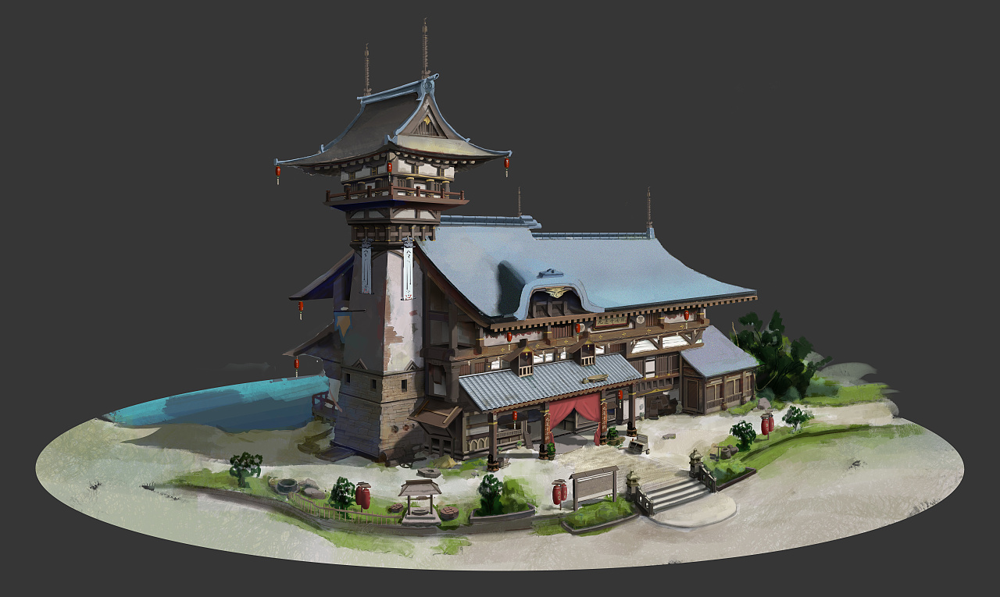
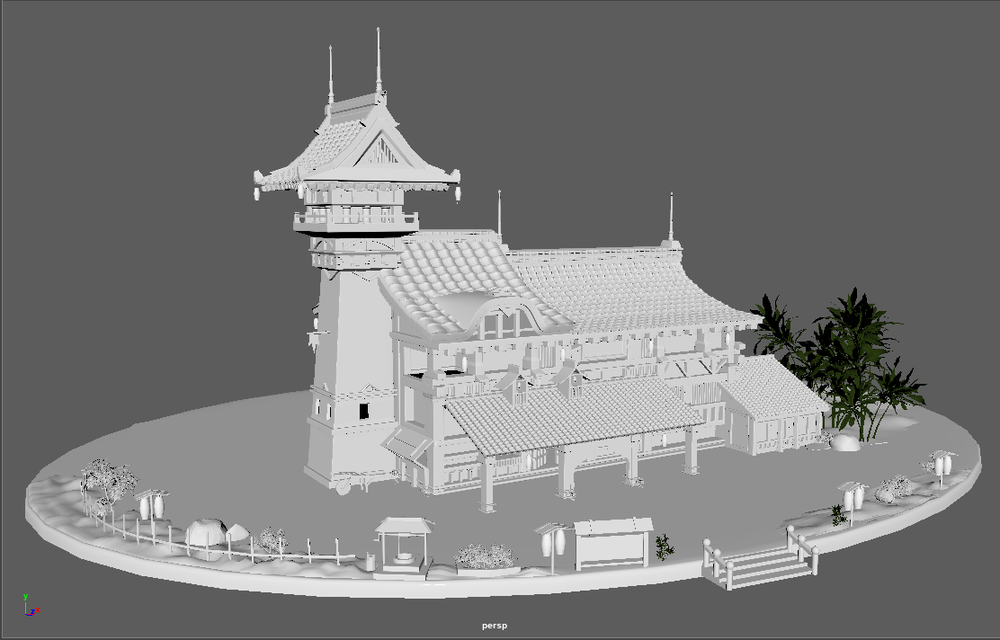
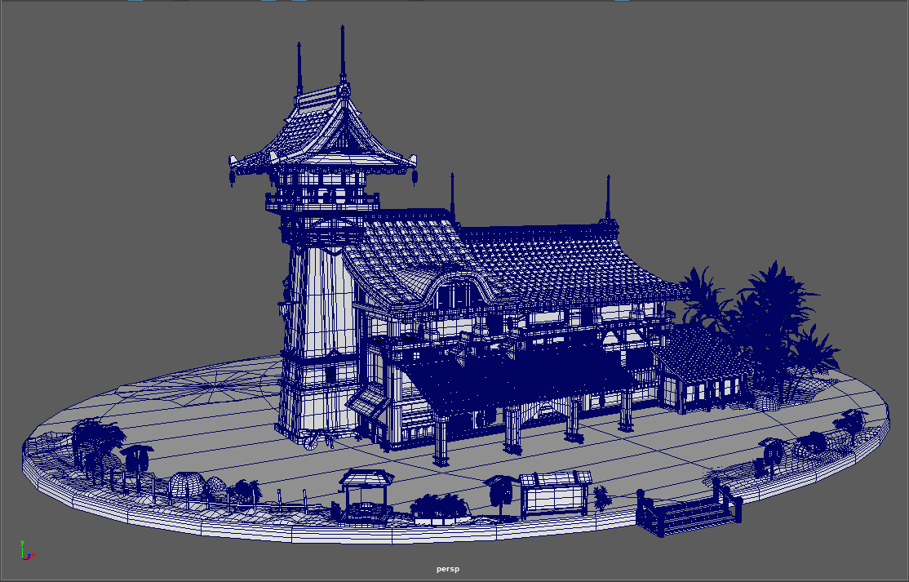
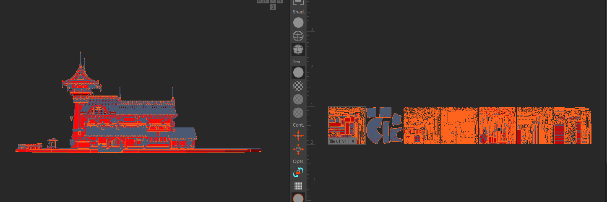
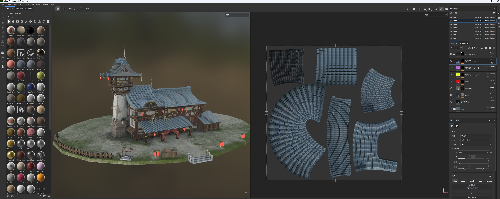
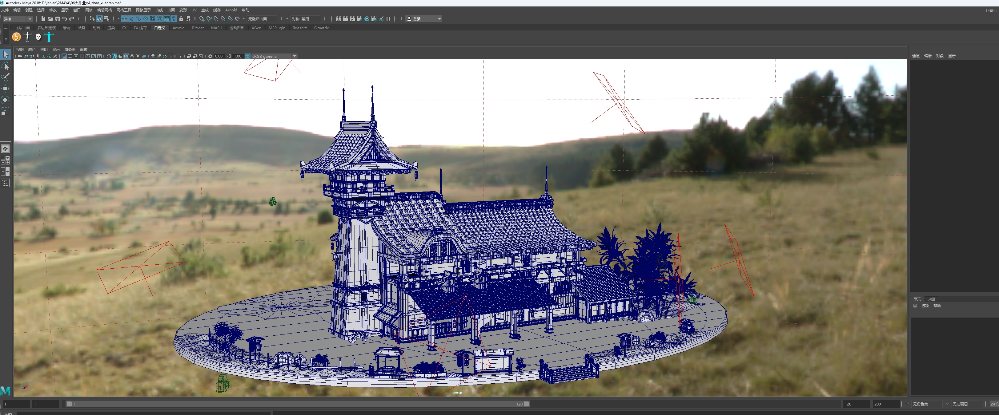

3D Environment Pipeline
古驿站
还原原画的完整 3D 场景制作，从参考拆解、Maya 建模、RizomUV 分 UV、Substance 3D Painter 贴图，到打光与 Arnold 最终渲染，整套流程一页看清。
这次页面不再做重复堆图，而是严格按制作先后顺序组织内容，让每一张素材都承担清晰职责。重点展示结构控制、流程完整度以及最终画面的呈现能力。
Pipeline Overview
整套流程总览
下面六个步骤就是这件作品的完整推进顺序。每一步都对应你现有素材里的真实过程图，逻辑更像作品板，而不是普通网页相册。
参考拆解
用原画和补充参考先定整体轮廓、局部结构和风格气质。
Maya 建模
白模和线框一起看，能更直接体现你的模型层级和体块控制。
RizomUV 分 UV
把屋面和建筑表面拆得规整，给后续贴图打稳定基础。
SP 贴图
在材质阶段补齐木、石、瓦、地表和装饰件的质感层次。
打光检查
确认镜头焦点、环境方向和光影关系，让画面开始成立。
Arnold 渲染
输出最终成图，把建模、贴图和打光的成果完整收束起来。
01
Reference
参考拆解与还原目标
先把整体气质、建筑轮廓和需要重点还原的局部位置看清，再进入建模阶段，避免后期细节越做越散。


重点一
先抓大轮廓，确保远看就能认出“古驿站”的体块关系。
重点二
将塔楼、屋面、入口和地台拆成明确层级，后续建模更稳。
重点三
把参考阶段要解决的问题提前列清，能减少后面反复返工。
02
Maya Modeling
白模与线框并列，直接看建模深度
这一阶段不需要花哨解释，白模看体块，线框看结构。两张图放在一起，比单独展示成图更能说明建模能力。


建模重点
主楼和塔楼形成高低主次，整体视觉中心稳定。
结构重点
屋瓦、檐口、栏杆和门窗都有足够结构支撑，不靠贴图伪装。
场景完整度
不仅做主体建筑，也同步把地面、植被和小道具补齐。
03
RizomUV
UV 阶段为后续材质表达打基础
这一步的价值在于让大面积屋面与建筑表面的纹理方向更可控，避免最终贴图阶段出现节奏混乱和拉伸问题。

为什么这一张必须展示
很多作品只展示建模和最终图，但真正完整的流程一定会把 UV 环节补出来。它说明你不是只会做造型，而是知道怎样让贴图顺利落下去。
曲面屋顶拆分合理，能更稳定地安排瓦片节奏和方向。
建筑外立面和局部构件提前整理 UV，有利于控制材质清晰度。
UV 做得稳，后面 Substance 贴图和 Arnold 渲染才更容易出效果。
04
Substance 3D Painter
贴图制作阶段，把木石瓦的层次真正做出来
贴图不是简单上色，而是把材质关系和使用痕迹做出说服力，让场景从“模型”变成“有生活气息的建筑”。

材质表达重点
古驿站的视觉成立，很大程度依赖于木构、石基、屋瓦和地面的统一关系。贴图阶段要做的，是让它们既有差异，又不脱离同一套氛围。
瓦面要保证重复节奏整齐，同时保留一定层次变化，避免过平。
石基与墙体之间要建立材质对比，让建筑更有重量感。
灯笼、牌匾和入口布幔这类点状元素，是强化场景记忆点的关键。
05
Lighting
打光阶段开始建立画面氛围和镜头焦点
当模型和材质已经成立后，打光的任务就是把视觉中心重新收束起来，让观看者一眼能读到主体、层次和空间方向。

这一阶段的作用
打光不是最后补一层滤镜，而是把前面所有步骤真正连起来。模型是否有层级、材质是否有重量、镜头是否有重点，都会在这一步暴露出来。
高塔、主屋顶和入口形成前中后的阅读顺序，让主体更明确。
背景不喧宾夺主，视线仍然集中在古驿站本体上。
灯光方向稳定后，Arnold 输出的最终画面更容易统一质感。
06
Arnold Render
最终渲染回收整套流程，完成作品集级展示
最终成图不是单独存在的结果，而是前面参考、建模、UV、贴图和打光层层推进之后的集中体现。

最终结果能说明什么
这张最终图已经不只是“做完了”，而是能完整体现你的项目能力：既有主体轮廓，也有局部细节，还有足够明确的审美方向和画面完成度。
主体轮廓清晰，塔楼和长屋面共同构成最强识别度。
局部细节可读，墙体、门头、屋瓦和装饰件都有展示空间。
整张图适合作为作品集单项目页面的核心成品图。
Project Value
这套页面现在强调的是“完整流程”和“建模深度”
页面逻辑已经按你的素材重新梳理成完整作品板：从参考到最终渲染一条线讲完，中间没有重复堆图，每一张图都有明确位置，也更符合面试和作品集浏览的阅读习惯。